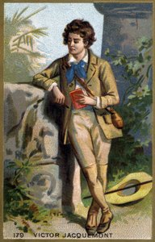

Early Life of Jean-François Champollion
From a very young age, Champollion showed extraordinary talent for languages. His passion for linguistics shaped his path to becoming the brilliant scholar who would later decipher Egyptian hieroglyphs.
Key Moments in Early Life
- 1790: Born in Figeac, France.
- 1797: Learned Latin and Greek at age 7.
- 1802: Began studying ancient languages like Coptic and Hebrew.
- 1805: Wrote his first scholarly papers on linguistics.
Words of Inspiration
"It is by the faithful study of languages that the soul of a nation is revealed." – Champollion